A Faster Implementation
One language. Several hosts.
The same architecture
in another language

Names live in environments. Closures retain them.
Teaching clarity and room
for speed
- Faithfully preserve the educational architecture.
- Make corresponding ideas easy to recognize.
- A ground-up Go design could organize things differently.
- Faster still? A hypothesis to implement and measure.
One possible internal change
- Today: string tags identify token kinds.
- Alternative: named
uint8 token-kind constants.
- Keep token text as strings.
- Measure the effect; do not assume a speedup.
Shared tests,
independent implementations
- Keep the standard test suite separate from the interpreters.
- Run the same programs against the same expected behavior.
- Validate behavior before comparing performance.
- Passing tests is evidence, not proof of full equivalence.
About Two Minutes of Go
counts := map[string]int{"calls": 1}
counts["errors"] = 0 // creates a new key
value, found := counts["missing"] // 0, false
names := []string{"left", "right"}
names = append(names, "result")
prefix := names[:2]
Maps resemble dictionaries; slices resemble lists.
Scope still works the same
way
for current := env; current != nil; current = current.Parent {
if value, ok := current.Variables[name]; ok {
return value, true
}
}
Change representation, not
meaning
type Value = *valueData

Rebinding a
scalar leaves its aliases unchanged

A recorded mixed-workload
comparison
| Runtime |
Median ms |
| CPython |
135.022 |
| PyPy, one warmup |
71.010 |
| PyPy, twenty warmups |
57.417 |
| Go |
9.858 |
PyPy runs the same Python Trinket interpreter with a JIT.
One optimization, different
outcomes
| Go workload |
Before ms |
After ms |
| Mixed total |
11.978 |
10.101 |
| AST execution |
47.888 |
48.006 |
What did the timer measure?
- Startup, parsing, or evaluation?
- Cold execution or warmed runtime?
- Same inputs and correct results?
- Repeated, interleaved samples?
Make the comparison
repeatable

Elapsed time and allocation counts answer different questions.
Read the evidence
Which claim survives the limitations?
No programming assignment: discuss the benchmark tables.